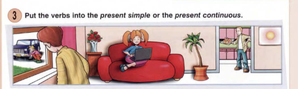
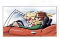
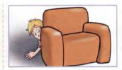
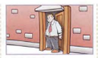
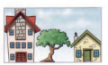
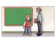
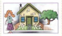
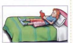
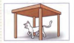

1. They're the car.
2. The boy is the armchair.
3. The man is the door.
4. The tree is the houses.
5. The teacher is the boy.
6. The girl is the house.
7. She's the bed.
8. The cat is the table.